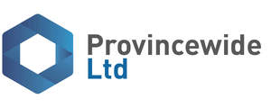

Trade Mark Journal No.2025/012 21 March 2025
UK00004169574 6 March 2025 (36)

- Class 36
- Insurance underwriting; Insurance subrogation; Insurance underwriting in the field of professional liability insurance; Insurance broking; Insurance brokerage; Brokerage (Insurance -); Brokerage of insurance; Provision of insurance services to insurance companies; Accident insurance underwriting services; Insurance services; Brokerage of non-life insurance; Insurance underwriting services; Arranging for financing of insurance premiums; Insurance for businesses; Insurance agencies; Brokerage of casualty insurance; Insurance consultancy; Insurance underwriting consultancy; Insurance for garages; Life insurance brokerage; Insurance for vans; Credit services for the payment of insurance premiums; Credit services for payment of insurance premiums; Insurance guarantees; Insurance underwriting and appraisals and assessment for insurance purposes; Insurance brokering; Insurance brokers (Services of -); Insurance for offices; Insurance administration; Insurance information; Information (Insurance -); Vehicle insurance services; Motor insurance brokerage; Insurance for hotels; Insurance consultation; Transport insurance brokerage; Consultations [insurance]; Life insurance agencies; Insurance advice; Insurance research; Research (Insurance -); Insurance brokerage services; Warranty insurance services; Arranging of insurance; Arranging insurance; Insurance (Arranging of -); Insurance agency and brokerage; Travel insurance services; Transit insurance brokerage; Medical insurance brokerage services; Insurance brokerage for property; Insurance investigations; Studies (Insurance -); Insurance for legal expenses; Insurance agency services; Provision of insurance services to reinsurance companies; Dental health insurance administration; Insurance premium financing services; Insurance services for the protection of drivers; Home insurance services; Household insurance services; Service insurance contracts; Administration of insurance claims; Personal insurance services; Provision of mortgage loan insurance; Arranging of credit insurance; Insurance management services; Motor vehicle insurance services; Administration of insurance business; Administration of insurance plans; Insurance plans (Administration of -); Arranging of life insurance; Insurance risk management; Arranging of travel insurance; Insurance advisory services; Insurance arranging services; Administration of insurance portfolios; Insurance brokerage relating to pets; Insurance information and consultancy; Insurance consultation services.
Provincewide Ltd